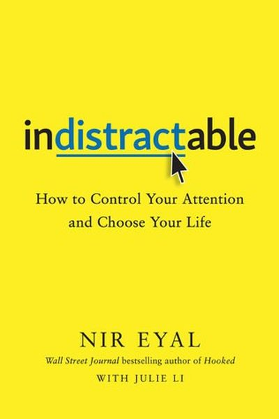
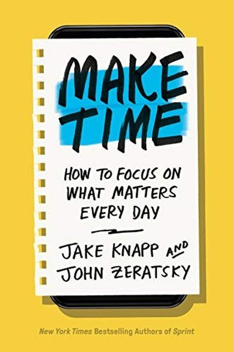

Library › Indistractable vs Make Time
Indistractable vs Make Time: Which Should You Actually Read?
Both books live on the same shelf: Productivity. Both are free to read here, in full, right now. Indistractable (2019, Nir Eyal) argues: You're not distracted by your phone - you're distracted by discomfort. Master your triggers and time… Make Time (2018, Jake Knapp & John Zeratsky) argues: You can't add hours, but you can design them: one Highlight a day, and a phone that works for you, n…

Indistractable
Nir Eyal (the author of Hooked, which taught companies how to build addictive apps) now teaches the other side: how to be indistractable. His central claim: distraction is not a technology problem - it's an emotional escape from internal discomfort (boredom, s
READ INDISTRACTABLE FREE →
Make Time
Jake Knapp and John Zeratsky - the Google designers behind time-management systems used by millions - wrote Make Time after realizing their own 'productivity' tools made them busier, not happier. Their system is radically simple: every day, pick ONE Highlight
READ MAKE TIME FREE →⚖ The Straight Answer
Read Indistractable if you want the former tech insider who built habit-forming apps reveals how to br
Read Make Time if you want how to focus on what matters every day - from the designers who built
The honest order for most readers: start with Make Time for the base, then go deeper with the other. Both summaries are free, no paywall, in 26 languages.
Every summary is free: lessons, examples, action steps, audio in your language.